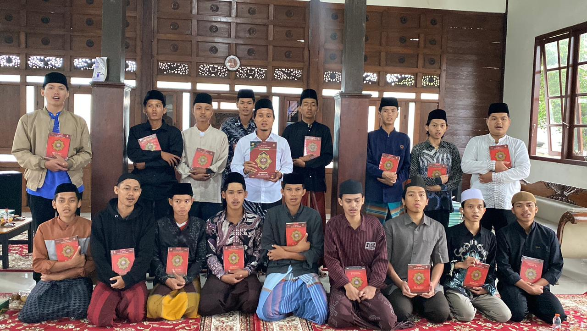

"Mencetak Kader Muballigh Profesional yang Siap Berkhidmat untuk Umat."
Daftar Sekarang (WhatsApp)Pondok Pesantren Takwinul Muballighin didirikan dengan semangat untuk melahirkan generasi pendakwah yang kompeten, moderat, dan memiliki integritas tinggi. Di bawah naungan YAIFY Yogyakarta, kami berfokus pada penguasaan kitab kuning, kemampuan retorika, dan adaptasi dakwah di era teknologi digital.
Visi kami adalah menciptakan muballigh yang tidak hanya menguasai dalil, tetapi juga mampu menjadi teladan (uswatun hasanah) bagi masyarakat di sekitarnya.

Dokumentasi Kegiatan Santri